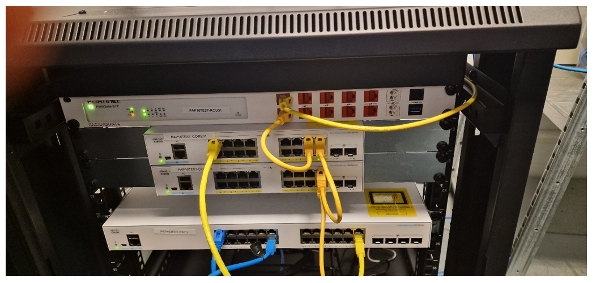
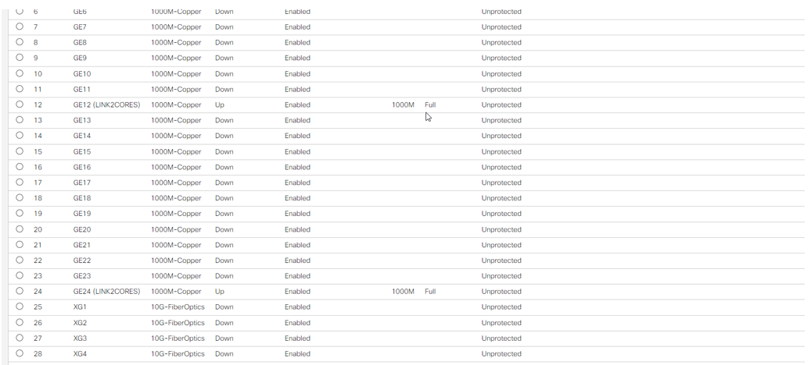
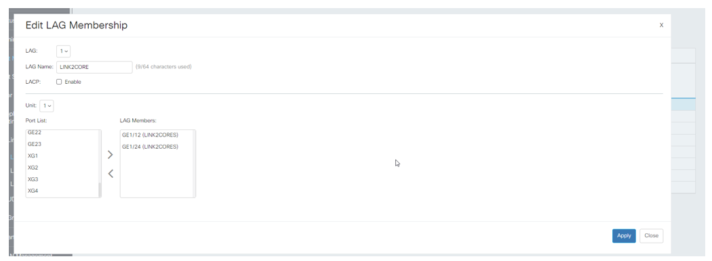
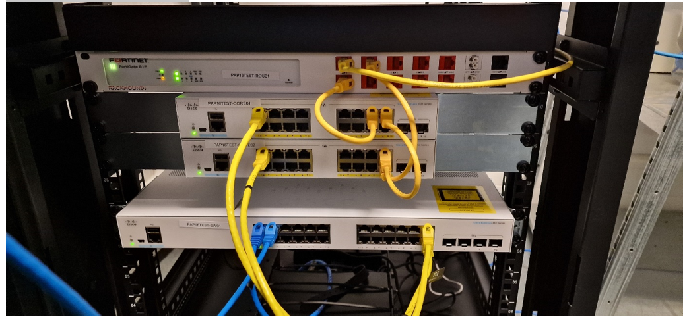

Inrichten CBS350 Coreswitch met VLAN ontwerp 2023
Inhoud
Algemene inrichting
Configureer de coreswitch eerst volgens de algemene handleiding voor een CBS350 (https://vragen.monta.nl/Docs/Operations/Netwerk/Switches/Handleiding-CBS350-inrichten-met-VLAN-ontwerp-2023/)
Geef de switch een IP-nummer in het Management-VLAN onder de .10 (dus bijv. 10.101.100.2).
Verbind de kabels met EEN lijn richting elke switch. Als je 2 kabels verbindt gaat het plat.

Op de switch die je wil toevoegen maak je van 2 poorten een LAG. Benoem deze poorten eerst.

LAG
Plaats de juiste poorten in de LAG

Vergeet niet van de LAG zelf een trunk te maken. Dit doet hij zelf al maar checken kan nooit kwaad. Verbind de poorten fysiek
